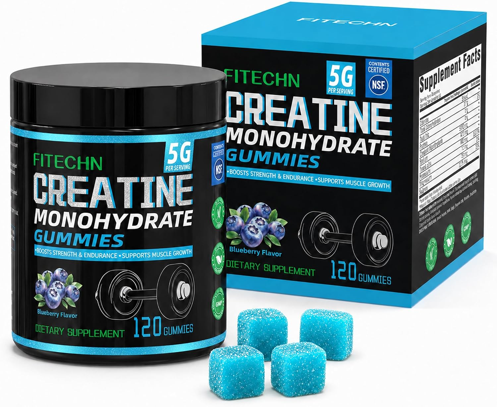
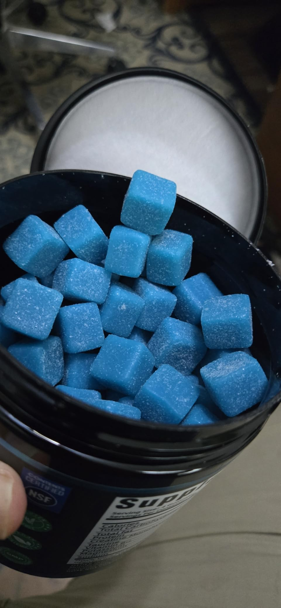
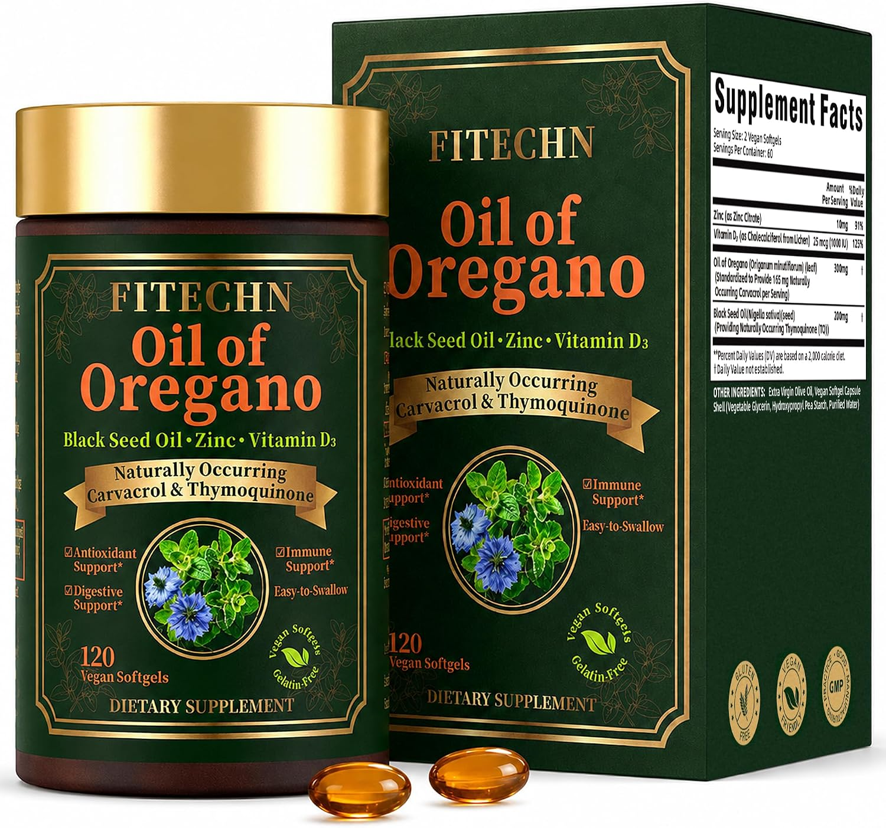
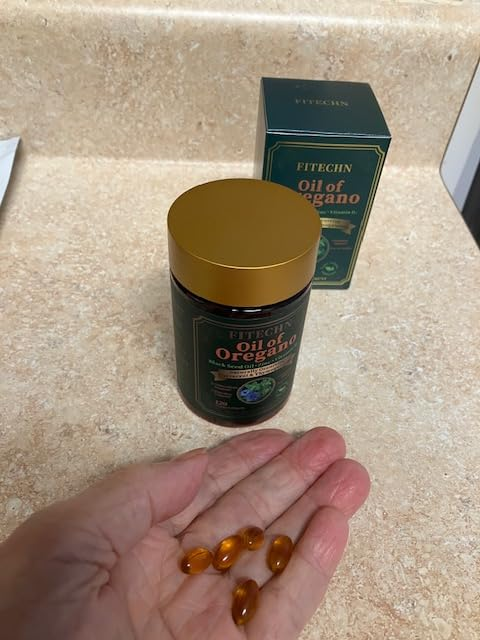

The FITECHN collection
Find your everyday routine.
A chewable creatine routine. A botanical softgel formula.
Find the details that make each one its own.

Blueberry · Chewable gummiesActive routine
Creatine Monohydrate
Gummies
Your creatine, in a chewable format.
A blueberry-flavored alternative to mixing powders. Four gummies provide 5g of creatine monohydrate, with a clearly measured serving for your routine.
- Creatine / serving
- 5g
- Serving size
- 4 gummies
- Per bottle
- 30 servings

IN EVERYDAY USESee the product up closeProduct video & customer photo →

Botanicals + nutrients · Vegan softgelsBotanical routine
Oil of Oregano
with Black Seed Oil
Four key ingredients. One softgel format.
Oregano oil and black seed oil come together with zinc and vitamin D3. A two-softgel serving brings the formula into a simple, clearly described format.
- Oregano oil / serving
- 300mg
- Serving size
- 2 softgels
- Per bottle
- 60 servings

IN EVERYDAY USESee the product up closeProduct video & customer photo →
Here when you need us
Questions about a product or order?
Tell us how we can help. We respond to all inquiries within 24 hours.